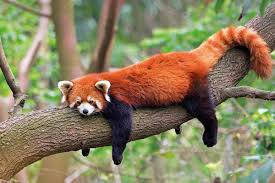

Червона панда - маленька, пухнаста тварина, яка живе в лісах Гімалаїв та південно-західного Китаю.
Незважаючи на назву, червона панда не є близьким родичем великої панди. Вона більше нагадує єнота.
Червона панда харчується бамбуком, фруктами, та іноді дрібними тваринами.
